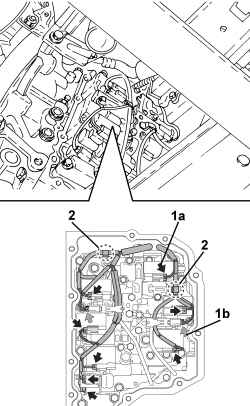
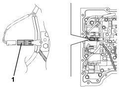
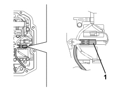
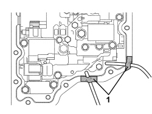
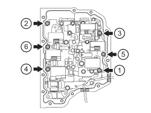
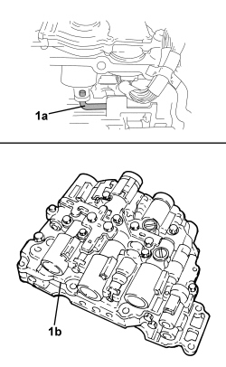
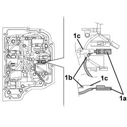

2130B40 GEAR SELECTION SOLENOID UNIT - R R
- Path
- Procedures > 21 GEARBOX UNIT > 2130 AUTOMATIC TRANSMISSION WITH DIFFERENTIAL > 2130B AUTOMATIC TRANSMISSION COMPONENTS > 2130B40 GEAR SELECTION SOLENOID UNIT - R R
- Kind
- repair procedure (removal / refitting; the operation number is the code)
- Applies to
- engines: 3.2 JTS; all production periods
- Interactive page
- https://sloeber94.github.io/elrnDB-aBrrSpdr/en/#/946004459
Applies to: engines: 3.2 JTS; all production periods
 Removing
Removing
 Refitting
RefittingOp. 7055B54 UNDER ENGINE PROTECTION/GUARD - R.R.
Op. 0010T20 ENGINE COOLANT - CHANGE
- Drain the automatic transmission fluid, refer to
Op. 0010T44 CHANGE AUTOMATIC TRANSMISSION FLUIDS
Op. 2130B36 AUTOMATIC TRANMISSION VALVE COVER R R
1. Detach electrical connections for solenoids (1a) and the timing sensors (1b).
2. Open the wiring retaining clips.

Applies to: engines: 3.2 JTS; all production periods
1. Remove the connector for the gearbox output rpm sensor from the retaining clip.

Applies to: engines: 3.2 JTS; all production periods
1. Remove the connector for the gearbox input rpm sensor from the retaining clip.

Applies to: engines: 3.2 JTS; all production periods
1. Undo the bolt (1a), keep the locking plate (1b) and then remove the oil temperature sensor (1c) from the valve assembly.

Applies to: engines: 3.2 JTS; all production periods
1. Move the wiring aside and secure it to the gearbox casing as illustrated.

Applies to: engines: 3.2 JTS; all production periods
1. Move the cables for the two speed sensors aside and secure them to the gearbox as illustrated.

Applies to: engines: 3.2 JTS; all production periods
1. Undo the bolts (1a) and remove the oil intake cover (1b) complete with gasket.

Applies to: engines: 3.2 JTS; all production periods
- Unscrew the bolts securing the valve assembly in the order shown in the figure.

Applies to: engines: 3.2 JTS; all production periods
1. Disconnect the joint (1a) and remove the valve assembly (1b).

Applies to: engines: 3.2 JTS; all production periods
Applies to: engines: 3.2 JTS; all production periods
Refitting
Removing1. Place the valve assembly in position and connect the joint as illustrated.
- Check that the blade (1a) does not interfere with the wiring whilst fitting the valve assembly.

Applies to: engines: 3.2 JTS; all production periods
- Provisionally tighten the bolts fixing the valve assembly to the gearbox.
- Provisionally tighten the bolts fixing the oil intake cover to the valve assembly.
- Tighten the bolts tightened previously to the recommended torque in the order illustrated in the diagram.

Applies to: engines: 3.2 JTS; all production periods
- Grease the temperature sensor O-ring with transmission fluid.
1. Fit the transmission fluid temperature sensor (1a) and the plate (1b) and tighten the bolt (1c) to the recommended torque.

Applies to: engines: 3.2 JTS; all production periods
1. Position the connector (1a) for the gearbox output rpm sensor as illustrated in relation to the valve wiring (1b) and secure it to the retaining clip (1c).

Applies to: engines: 3.2 JTS; all production periods
1. Position the connector (1a) for the gearbox input rpm sensor as illustrated in relation to the valve wiring (1b) and secure it to the retaining clip (1c).

Applies to: engines: 3.2 JTS; all production periods
- Connect electrical connections for solenoids and the timing sensors.
- Close the wiring retaining clips.
Op. 2130B36 AUTOMATIC TRANMISSION VALVE COVER R R
- Refill and top up the automatic transmission fluid level, refer to
Op. 0010T44 CHANGE AUTOMATIC TRANSMISSION FLUIDS
Topics linked from this page (6)
- 0010T20 ENGINE COOLANT - CHANGE
- 0010T44 CHANGE AUTOMATIC TRANSMISSION FLUIDS
- 2130A38 AUTOMATIC TRANSMISSION FLUID HEAT EXCHANGER - R + R - INCLUDING LEVEL TOP UP IF NECESSARY
- 2130B36 AUTOMATIC TRANMISSION VALVE COVER R R
- 7055B54 UNDER ENGINE PROTECTION/GUARD - R.R.
- 7210E10 R.R. FRONT BUMPER